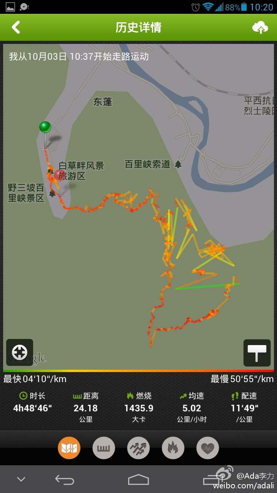
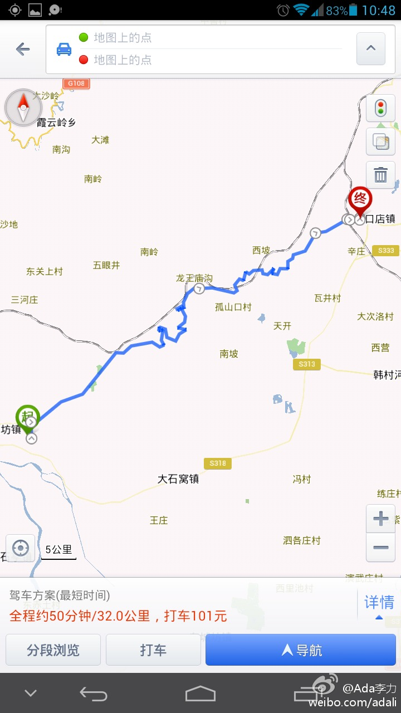
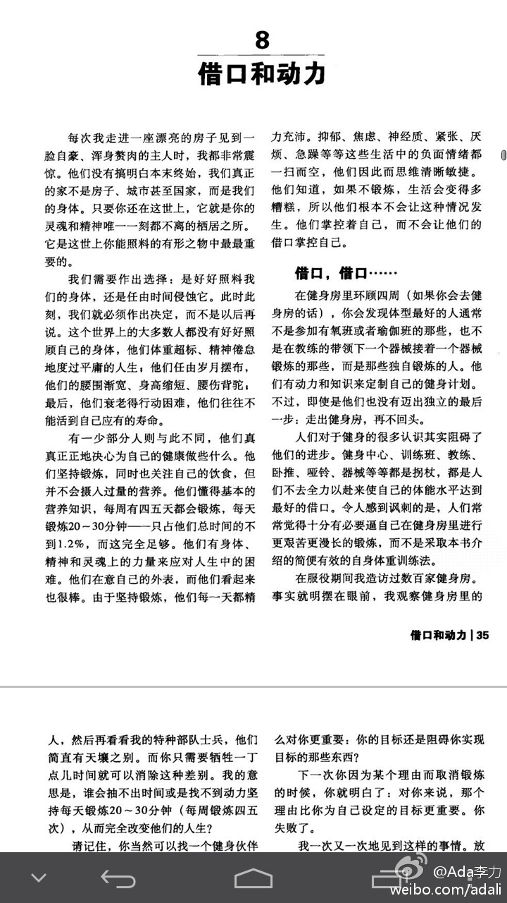

昨天在百里峡景区，@咕咚运动 竟然记录了24公里，按照小朋友边玩边走的进度，每小时3公里已经是最大速度，满打满算也就14公里。不过对我来说，一天的运动量足够了，今早小腿肚酸胀，估计跟那2千多级的栈道有关。 
经历了长假路上堵车与景点的人山人海，明俊说退休后要去没人的地方住。说话间，导航带我们上了一段30公里长的山路—周张路，才晚上八点左右，一路开过去竟然无车，我们可以肆意在路中间骑着中线开。刚才还说喜欢没人的明俊一路都在数落我选了这么个冷清的路线，他觉得瘆人。 
《无器械健身》推崇力量训练，其中提到"体型最好的人通常不是参加有氧班或瑜伽班的那些，也不是在教练的带领下一个器械接一个器械锻炼的那些，而是那些独自锻炼的人，他们有动力和知识定制自己的健身计划"。 
住处附近几处在建楼盘，路边自然形成一个面向民工的路边摊市场，吆喝声此起彼伏，有个卖拖鞋内衣的女声最具穿透力。今天，姣姣在家晃来晃去，无所事事，于是吆喝起来：“拖鞋五块，内衣三块”。— 环境的力量真是强大